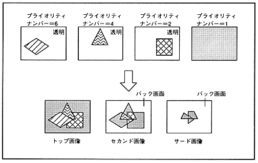

The priority (display priority) of the sprite and each scroll screen is determined by comparing the size of the priority number of the screen where the dots located at the same TV screen coordinates are not transparent for each dot. The higher the priority number, the higher the priority of the screen. An image composed of dots with the highest priority is called the top image 061 third image. In addition, the back screen is displayed at the position where the dots of all sprites and each scroll screen are transparent. The priority function is shown in Figure 11.1.
Figure 11.1 Priority function
